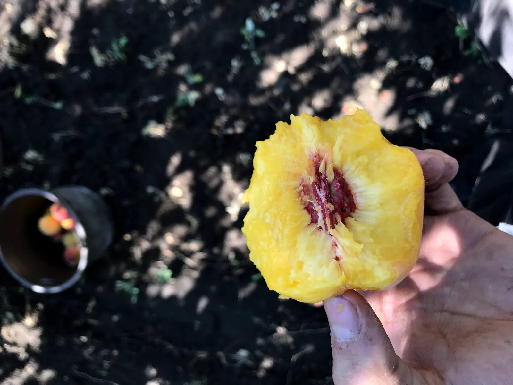
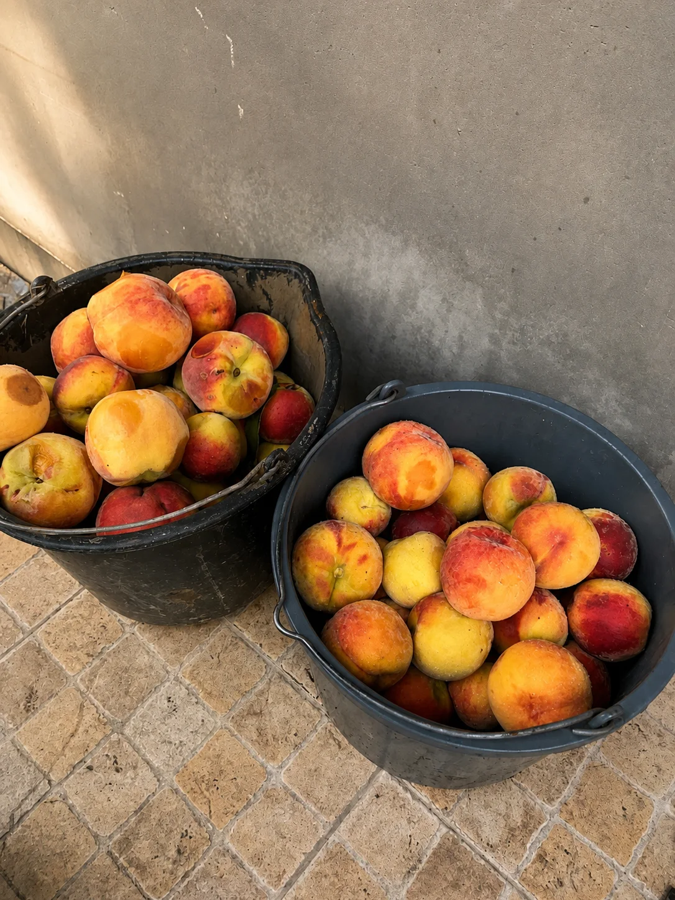
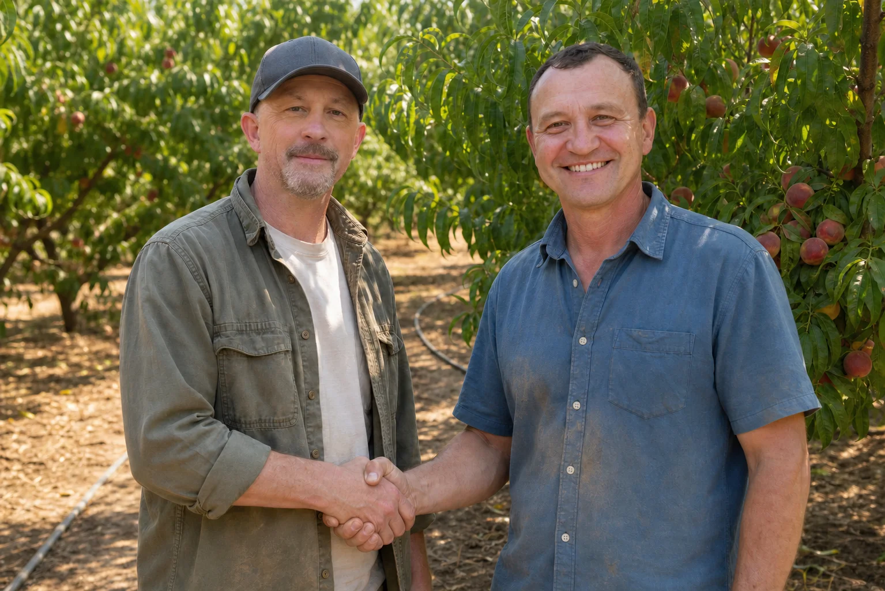

01 / THE PLOT
Good fruit has nowhere to hide.
01 / THE PLOT
Good fruit has nowhere to hide.
02 / THE SEASON
Good fruit starts below the surface. The soil and every tree are fed at the right stage, giving roots the nutrients they need without wasting what the land provides.
Disease and pests never take a season off. The orchard is watched constantly, then treated with the right crop protection at the right moment — carefully measured and never used blindly.
Heat changes quickly here. Irrigation is checked, adjusted, and checked again so the roots receive what they need, when they need it.
Branches are opened to light and crowded fruit is thinned by hand. Fewer peaches on the tree means more strength, sweetness, and size in each one.
Color is only the first clue. A peach is ready when it gives just enough beneath your thumb.
03 / THE PROOF

There is not much to add. Come and taste it for yourself.
— The family rule


04 / THE BROTHERS
Brothers, growers, and the two pairs of hands behind every harvest.
They fertilize, water, prune, mend, carry, and begin again the next morning. The work is ordinary. The care is not.
This orchard was never designed to be the biggest. It was built to produce something the family would be proud to put on its own table.
When the peaches are ready
Visits are simple and personal, just like the orchard. Let us know before you set out.